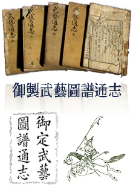
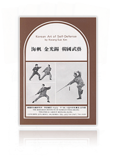
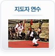
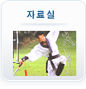

(사)대한십팔기협회 처음으로
메뉴 열기
대한십팔기협회
INTRODUCTION
宗師 해범 선생님
연혁
설립취지문
조직도
임원명단
전승관
전수관
수련관 안내
한무련과 겨무동
십팔기
SIBPALKI
십팔기란 무엇인가?
십팔기 역사
18가지 기예
상무숭덕의 정신
역사적인 자료
무학(武學)
THEORY
권법요결
본국검
조선창봉교정
내공
무언
무예도보통지
MUYEDOBOTONGJI
사도세자와 정조
무예도보통지
무예제보
무예제보번역속집
무예신보
자료실
DATA ROOM
공지사항
행사자료
언론보도
기타
자료실


2018년 영남지역 승단심사 안내
2017년 영남지역 승단심사 안내
2016년 정기 서울/수도권지역 승단심사 안내
2016년 영남지역 승단심사 안내
2015년 정기 서울/수도권지역 승단심사 안내
2015년 영남지역 승단심사 안내
2015년 정기 서울/수도권지역 승단심사 안내
대한십팔기협회 홍보 영상
2008년 7월 EBS 다큐 프라임 - 영상 무예도보통지
조선창봉교정(朝鮮槍奉敎程)
본국검(本國劍)
권법요결(拳法要訣)
무예도보통지 실기해제(武藝圖譜通志 實技解題)
무비지(武備志) 중 조선세법(朝鮮勢法)에 관한 부분
조선일보 2010.9.4.[武林高手를 찾아서] "다른 무술인과 겨뤄 져본 적 없어"
KBS2 스포츠 타임 - 전통무예 매력에 흠뻑 빠진 사람들 - 2010.01.01 영상
KBS 한국사 傳 - 무인(武人) 정조대왕 - 2008.10.27 영상
EBS 다큐 프라임 - 영상 무예도보통지 - 2008.08 영상
매일신문 - 2009년 8월 28일 기사
KBS 2TV 스포츠쇼 - 1988년 2월 18일 영상
단기 4278년(1945년) 11월 8일(음력 10월 3일) 매일신보 기사

